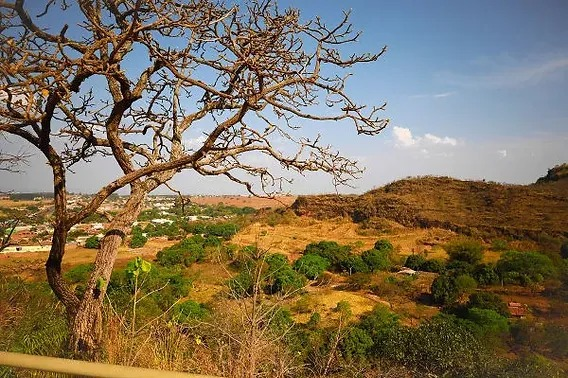

Cerrado
O Cerrado é o segundo maior bioma do Brasil, ocupando aproximadamente 24% do território nacional, e está localizado principalmente na região Centro-Oeste, mas também se estende por partes do Sudeste, Nordeste e Norte. Conhecido como a "savana brasileira", o Cerrado é caracterizado por uma vegetação diversificada, que inclui árvores de troncos retorcidos, arbustos, gramíneas e uma grande quantidade de espécies endêmicas, ou seja, que só existem nessa região. O bioma possui um clima tropical sazonal, com uma estação seca bem definida, que vai de maio a setembro, e uma estação chuvosa que ocorre de outubro a abril. A biodiversidade do Cerrado é notável, abrigando milhares de espécies de plantas, muitas com potencial medicinal, além de animais como o lobo-guará, a onça-pintada, o tamanduá-bandeira e várias aves raras. É considerado um dos 36 hotspots de biodiversidade do mundo, ou seja, áreas prioritárias para a conservação devido à riqueza de espécies e às ameaças que enfrentam. O Cerrado é conhecido como o "berço das águas", por ser a região de origem de importantes bacias hidrográficas brasileiras, como as do Rio Tocantins, São Francisco e Paraná. Apesar de sua importância ecológica, o Cerrado sofre grande pressão devido ao avanço da agropecuária, monoculturas, desmatamento e queimadas, que ameaçam sua biodiversidade e a qualidade dos recursos hídricos. A conservação desse bioma é vital para garantir a manutenção dos serviços ambientais que ele oferece, como a regulação do clima, a preservação da água e a conservação da fauna e flora nativas.